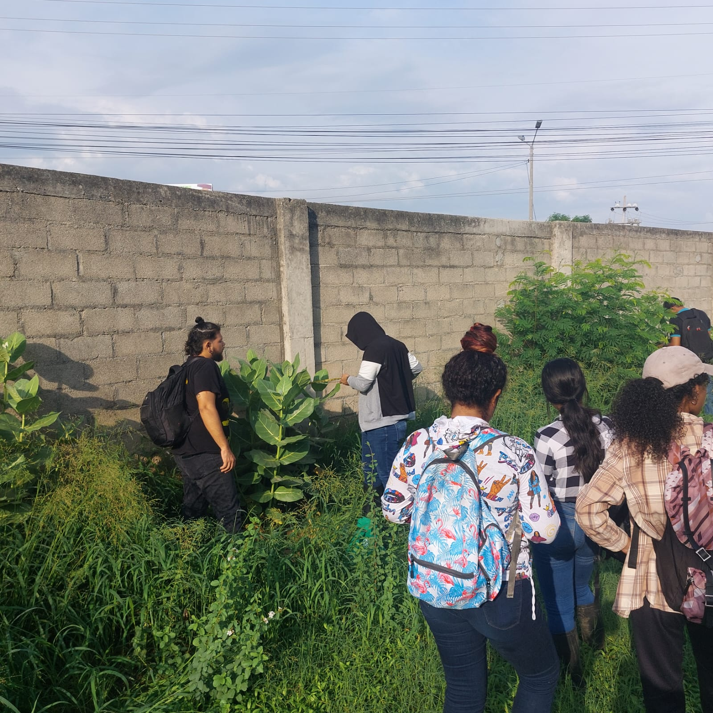
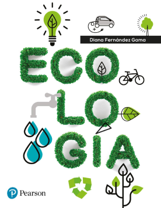

Videos clases

[
Los videos que se presentan a continuación, son el resultado de sesiones realizadas a partir del 2020 hasta la fecha y se encuentran alojadas en el repositorio de videos “Stream” de la universidad.
Videos de las semanas 1 - 2
1. Análisis Climático de ecosistemas

[
Nota: Para estos y el resto de videos de Stream, sugiero colocarlos en velocidad 1.5x, para que el avance sea más eficiente.
- Semana 1. Organización de los datos y construcción del climatograma
- Semana 2. Organización de datos, climatográma y resto de resultados
- Semana 2. Otros. Organización de datos de zona bananera
–
Videos de la semanas 5 a 6
1. Manejo de programas Ramas y RStudio para modelos exponenciales (parte 1)

Para estos videos, sugiero instalar previamente el Ramas Ecolab, RStudio y R, siguiendo las indicaciones de las pautas entregadas por el docente en el repositorio - taller 4.1 (enlace a las pautas del taller).
Semana 4. Taller de modelos exponenciales en Ecolab y RStudio (parte 1)
Semana 5.Taller de modelos exponenciales en RStudio (parte 2)
–
Videos de la semanas 6 a 7
1. Manejo de RStudio para modelos logísticos

Para estos videos, sugiero instalar previamente el RStudio y R, siguiendo las indicaciones de las pautas entregadas por el docente en el repositorio - taller 4.2 (enlace a las pautas del taller).
–
Videos de la semanas 8 y 9
1. Tablas de vida y modelos matriciales de poblaciones

Semana 9. Taller de computo tablas de vida y matrices (parte 1) 2023-II
Semana 11. Taller de computo tablas de vida y matrices (parte 2) 2023-II
Semana 8. Sesión 1 - Ejercicio en clase con Pizarra Virtual - Tablas de vida (parte 1)
Teoría Tablas de vida

Semana 8. Sesión 1 - Tablas de vida y Modelos de estado en poblaciones
Taller pizarra - modelo de estado

Semana 9. Sesión 3 – Ejercicio en la pizarra – Modelos de estado – parte 1
Semana 9. Sesión 3 – Ejercicio en la pizarra – Modelos de estado – parte 2
Semana 9. Sesión 3 – Ejercicio en la pizarra – Modelos de estado – parte 3
Semana 11. Tablas de vida y modelos de edad y de estado - poblaciones-Teoría
Semana 9. Taller de computo tablas de vida y matrices (parte 1) 2023-II
Semana 9. Taller de computo tablas de vida y matrices (parte 2) 2023-II
Teoría Tablas de vida
Semana 8. Sesión 1 - Tablas de vida y Modelos de estado en poblaciones
Taller pizarra - modelo de estado
Semana 9. Sesión 3 – Ejercicio en la pizarra – Modelos de estado – parte 1
Semana 9. Sesión 3 – Ejercicio en la pizarra – Modelos de estado – parte 2
Semana 9. Sesión 3 – Ejercicio en la pizarra – Modelos de estado – parte 3
Videos de la semanas 10 y 11
1. Tablas de vida y modelos matriciales de Calotropis

Semana 11. Pautas del taller de Calotropis en la Granja
Semana 11. Taller de cómputo. Calotropis (parte 1)
Semana 11. Taller de cómputo. Calotropis (parte 2)
2. Tabulación de datos - salida de campo

Semana 10. Tabulación_ Datos de campo-Batimetría
Semana 10. Tabulación_ Datos de campo - Hidrología (parte 1) Objeto flotador
Semana 10. Tabulación_ Datos de campo - Hidrología (parte 2) Objeto flotador
Semana 10. Tabulación_ Datos de campo - Hidrología (parte 3) Trazador con sal
Videos de la semanas 12 y 13

1. Teoría patrones de distribución de poblaciones
2. Ejemplos patrones de distribución aleatoria

1. Ejemplo - Distribución aleatoria de poblaciones (parte 1)
2. Ejemplo - Distribución aleatoria de poblaciones (parte 2)
3. Ejemplo - Distribución aleatoria de poblaciones (parte 3)
3. Ejemplos patrones de distribución agrupada

1. Ejemplo - Distribución Binomial negativa de poblaciones (parte 1)
2. Ejemplo - Distribución Binomial negativa de poblaciones (parte 2)
3. Ejemplo - Distribución Binomial negativa de poblaciones (parte 3)
Semana 13. Ejercicio en clase (2023-II). Distribuciones aleatoria y agrupada
Semana 13. Ejercicio en clase (2023-II). Distribuciones aleatoria y agrupada
Videos de la semanas 14 a 15

[
1. Introducción a la Ecología de Comunidades
Clase de 2020 - Introducción al módulo de Communidades(parte 1)
Clase de 2020 - Introducción al módulo de Communidades(parte 2)
Clase de 2020 - Introducción al módulo de Communidades(parte 3)
–
2. Taller de computo Ecología de Comunidades

Semana 14. Taller visto en clase de 2023-II - Taller comunidades - PAST
Semana 14. Taller visto en clase de 2023-II - Taller comunidades - vegan e iNEXT
–
Taller visto en clase de 2021-II - Taller comunidades - PAST e iNEXT
Taller visto en clase de 2021-I - Taller comunidades - PAST (parte 1)
Taller visto en clase de 2021-I - Taller comunidades - iNEXT (parte 2)
Semana 14. Taller visto en clase de 2023-II - Taller comunidades - PAST
Semana 14. Taller visto en clase de 2023-II - Taller comunidades - vegan e iNEXT
–
Bibliografía recomendada de la Biblioteca Virtual:
Ecología (Diana Fernández, 2017) Módulo de diversidad, abundancia y estratificación

Elementos de Ecología (Thomas Smith, 2015) Módulo de Estructura de la Comunidad.

Ecología (Manuel Moles, 2019) Módulo de especies, abundancia y diversidad.